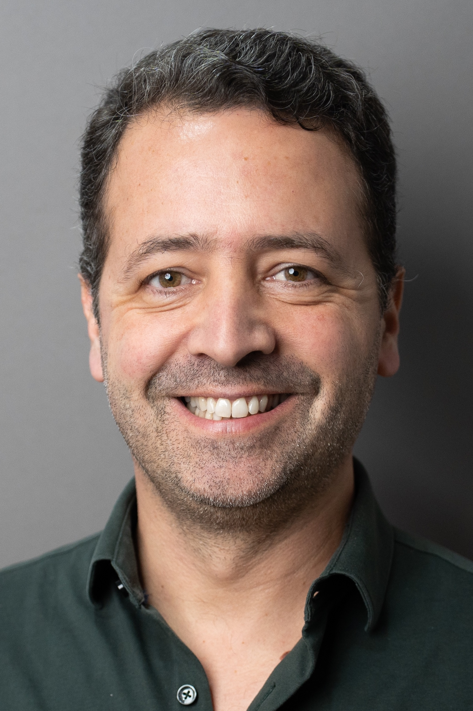

Disease Transcriptomics Lab · NOVA Medical School & GIMM, Lisbon
Research interests: Alternative Splicing · Gene Regulation · Computational Biology · Critical Thinking
Nuno graduated in Technologic Physics Engineering from Instituto Superior Técnico (Lisbon, Portugal) in 2000. The research on cardiovascular variability associated with the degree's final project took place at the University of Lisbon Medical School, under the supervision of the late Professor Luis Silva Carvalho.
He completed a Graduate Program in Biophysics and Biomedical Engineering at IBEB, Faculty of Sciences of the University of Lisbon in 2001.
He then did his PhD in Biomedical Sciences at the Instituto de Medicina Molecular / University of Lisbon Medical School with Professor Maria do Carmo Fonseca. Most of the PhD research took place at the University of Cambridge with Dr. Samuel Aparicio. He also visited the lab of Juan Valcárcel at EMBL Heidelberg for a few months in 2002. His PhD work involved bioinformatics studies on the complexity of splicing and gene expression, including studies on the evolution of splicing factors and the RNA binding of splicing factors.
Nuno was a postdoctoral member of the Computational Biology Group at the University of Cambridge, led by Professor Simon Tavaré and based at the CRUK Cambridge Research Institute, from 2006 to July 2010. His main research was focused on understanding the complexity of gene expression regulation and its impact on disease mechanisms, namely oncogenesis. He collaborated with the Odom Group in determining the molecular mechanisms responsible for the stability of transcriptional programs, studying the regulation of lineage-specific retrotransposons and repeat elements. He also contributed to the complete transcriptomic and genomic reannotation of Illumina BeadArray probe sequences and numerous cancer research studies.
Nuno joined the Blencowe Lab at the University of Toronto in August 2010, where he was involved in the analysis of mRNA-seq data for the inference of tissue- and species-specific alternative splicing patterns. He was awarded a Postdoctoral Fellowship from the Canadian Institutes of Health Research and a Marie Curie International Outgoing Fellowship.
Nuno moved in June 2013 to the iMM (now GIMM) for the return phase of his Marie Curie Fellowship. He was also, from October 2013 to April 2015, an Honorary Senior Research Fellow at the Nuffield Department of Obstetrics and Gynaecology of the University of Oxford.
He received an EMBO Installation Grant and an FCT Investigator Starting Grant, establishing his independent research group at GIMM in early 2015. In 2020, he was awarded a 6-year Assistant Researcher contract in FCT's Individual Call to Scientific Employment Stimulus.
Nuno is an Invited Associate Professor at the Faculty of Medicine, University of Lisbon, where he teaches Bioinformatics to Masters students in Biomedical Engineering, Oncobiology, and Biomedical Research.
He received the University of Lisbon / Caixa Geral de Depósitos 2024 Scientific Award in Biomedical Sciences. Since October 2024, he coordinates the Twinning project BIOMICS, funded by the European Union, aimed at "Fostering Excellent Research, Training and Innovation in Biomedical Data Science".
★ denotes key papers · (* co-first authors) · (+ corresponding author)